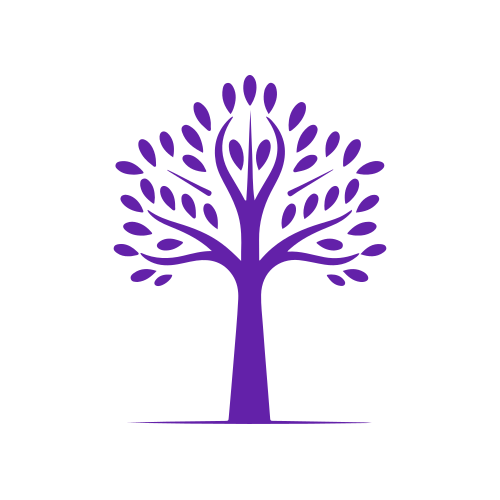
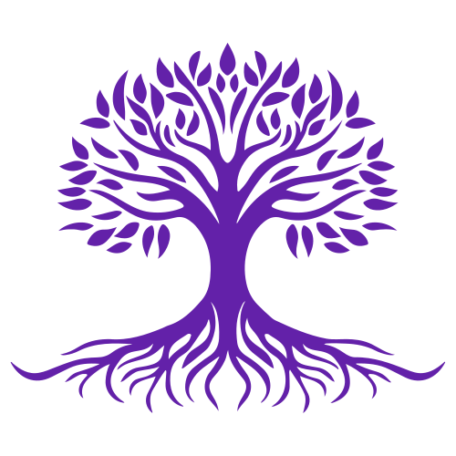
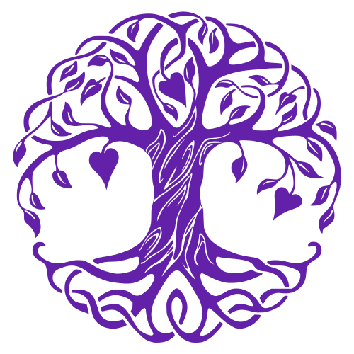

Tiny Oak runs your annual cycle on LIGHT, a research-grounded leadership framework built around service. Goals stay aligned across the year. Managers and employees enter every conversation with shared context. Calibration delivers organisational fairness. The result is a measurable lift in retention, manager effectiveness, and visible leadership growth.
Tiny Oak is named for a growth model that runs through the product. People start small. The work is in becoming substantial — one cycle, one conversation, one rung at a time. The system was built to make that growth observable in the work, measurable in the data, and shared across the team.
Performance reviews are the rare moment when a year gets to be a story instead of a calendar. Your reflection, your manager's coaching, the organisation's calibration — converging on one shared artifact. Tiny Oak makes that story structured, evidence-based, and forward-shaping.



Your goals cascade from organisational priorities and stay connected across the year. Progress accrues as live data. Performance conversations rest on evidence the cycle has been gathering throughout, not a hurried week of recall.
Research on goal-setting theory consistently shows frequent progress markers and revisits outperform annual goal-setting on engagement and follow-through.Side-by-side self and manager review gives every people manager structure for a coaching conversation. The cycle becomes a venue for manager development as much as for employee evaluation.
Meta-analyses on workplace engagement identify manager quality as the single largest predictor of retention, performance, and discretionary effort.LIGHT renders leadership as a ladder of service with named rungs, attributes, and behavioural anchors. Growth becomes observable in the system. Promotions become defensible. Succession planning becomes specific.
Studies on servant and service-oriented leadership link the orientation to higher trust, stronger team cohesion, and measurable performance outcomes.Decades of organisational research on servant leadership, goal-setting, and continuous feedback converge on a single insight: leadership grows through service, and people develop through structured reflection. LIGHT translates that insight into an operating model.
Each rung asks one clarifying question: who are you serving at this level? Movement up the ladder reflects an expanding circle of service, from self to clients to team to organisation to higher purpose. The attributes that accompany each rung describe what that expansion looks like in practice.
Most leadership frameworks fail at the same point: they live in offsite workshops and laminated cards while performance reviews still ask the same generic questions. LIGHT works because it IS the system. The self-assessment asks LIGHT questions. The manager review surfaces LIGHT attributes. Calibration resolves in LIGHT terms. The framework and the cycle are not separate artifacts.
Most performance systems treat the cycle as a deadline. Tiny Oak treats it as an arc. Four product choices reshape how the year feels — for the people doing the work, for the managers coaching them, and for the leaders trying to read the organisation.
Tiny Oak runs continuously. Your goals stay live across the year. Notes accumulate. Feedback drops in without ceremony. By the time the formal cycle starts, most of the year's evidence is already in the system — the review becomes a synthesis, not an archaeological dig.
An annual cycle isn't a deadline; it's a chapter. Themed cycles — "Chase the Light", "Plant the Seeds", "Hold the Ground" — give every team a shared narrative to organise around. The work feels less like a process to survive and more like a story to inhabit.
Color-coded cues throughout the interface tell every person what needs their attention right now. A red dot on the Self-Assessment button until you submit. A flagged-goal chip when a target is drifting off-pace. Reminder emails, approval notifications, and cascade alerts keep work moving between managers and their teams across the year. The result is continuous collaboration and true accountability.
Personal targets trace upward to company priorities. Nobody invents goals in a vacuum. Every person can see how their year connects to the organisation's year. Every manager can see the line from both directions. Strategy stops being a slide deck and becomes a chain of cascaded commitments.
Cascade from organisational priorities or build bottom-up. Progress logs accumulate through the cycle. By the time the conversation happens, the evidence is already there.
Self-assessment and manager review render together. Both sides enter the 1-on-1 prepared. The meeting becomes a working session for development rather than a delivery of verdicts.
Calibration brings every review into one view before anything goes out. Cross-team inconsistencies surface. Outcomes flow forward into incentives, growth plans, and the next cycle's priorities.
LIGHT translates established findings on servant leadership and goal-setting into a working operating model. Each rung names attributes and behavioural anchors that hold up under scrutiny.
Manager and self-review render on the same page. Every 1-on-1 begins from a shared picture. Coaching gets the airtime that judgement used to occupy.
Every assessment passes through cross-organisational calibration before publishing. Bias, drift, and inflation get addressed at the source, where they can still be corrected.
The platform understands who's in scope for each cycle. New joiners are treated fairly. Long-tenured employees receive the full review cadence. Departures are accounted for cleanly.
Probation milestones, quarterly markers, and ongoing check-ins all flow through one place. Year-end starts with a year's worth of evidence already in view.
Cycle outcomes feed performance-linked incentives, so compensation discussions rest on accumulated evidence and a shared rubric the whole organisation can stand behind.
A 30-minute walkthrough covers a working understanding of LIGHT, a tour of the platform, and a frank conversation about fit. We come prepared for substance.
Performance reviews are the rare moment when a year gets to be a story instead of a calendar. Your reflection, your manager's coaching, your organisation's calibration — converging on one shared artifact. Tiny Oak makes the story structured, evidence-based, and forward-shaping.